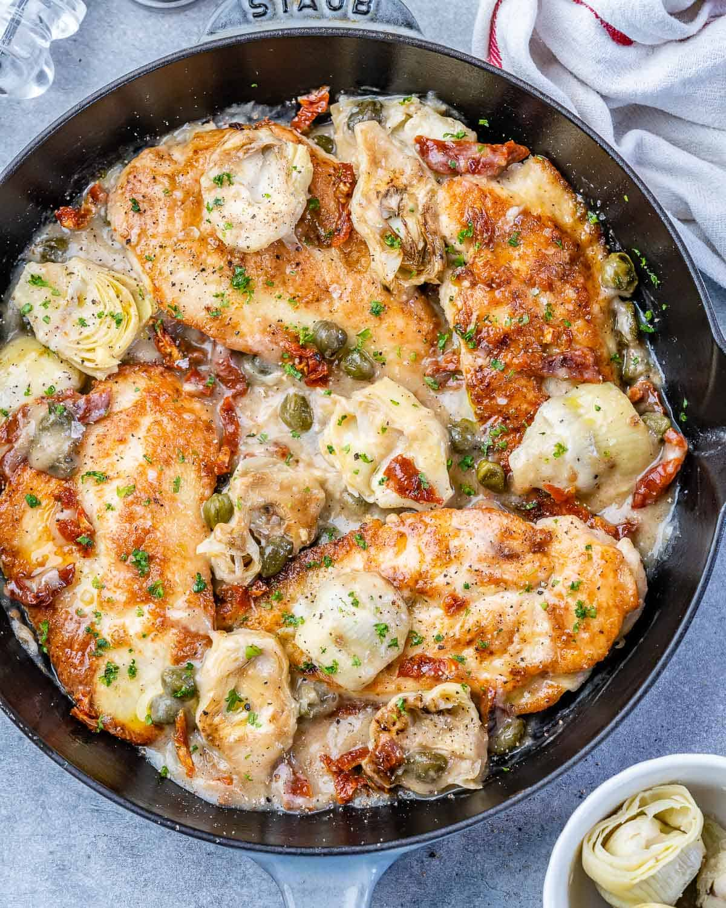

Mediterranean Chicken

Description:
This dish is a staple if you have a cast iron pan. It is able to be cooked
at the same time for minimal hassle and will have all your guests impressed
by the sheer amount of flavour within.
Though we recommend using maryland chicken pieces for this dish, you can use
anything that is available to you. The combination of the simple ingredients
is what matters the most and many of them are easily substitutable.
Ingredients:
- Maryland Chicken
- (Cherry) Tomatoes
- Spinach
- Heavy Cream
- Parmesean
- Parsley
Steps:
-
Seer the chicken pieces unitl some colour has developed on the chicken
and there is enough fond at the bottom of the pan.
-
Remove the chicken pieces and sautee the tomatoes and spinach with some
garlic and parsley to develop the flavours and to make use of the fond.
-
Add the heavy cream and let the flavours incorporate. After a minute,
add the Parmesean and let the sauce thicken.
-
Add chicken pieces back in and cover with sauce. Let it simmer for a
couple minutes to heat the chicken back up and then you're done!